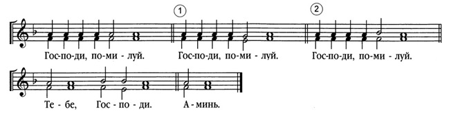
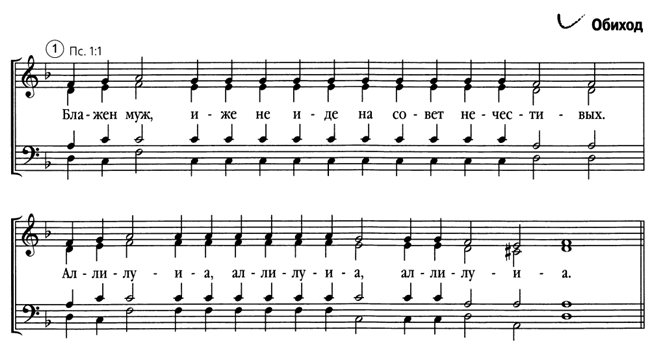

Всенічне бдінння ←
Всен0щное бдёніе
Вели1каz вечeрнz
Діaконъ: Востaните!
Ли1къ: ГDи бlгослови2.
Предстоsтель возглашaетъ си1це: Слaва с™ёй, и3 є3диносyщнэй, и3 животворsщей, и3 нераздёльнэй трbцэ, всегдA, нhнэ и3 при1снw и3 во вёки вэкHвъ.
Ли1къ: Ґми1нь.
И# начинaетъ предстоsтель, с пою1щей и3 пр0чей брaтіи:
Пріиди1те, поклони1мсz: три1жды. Пріиди1те, поклони1мсz и3 припадeмъ є3мY.
Псал0м 103, предначинaтальный
Бlгослови2 душE моS гDа / Бlгословeнъ є3си2 гDи /
ГDи б9е м0й, возвели1чилсz є3си2 ѕэлw / Бlгословeнъ є3си2 гDи /
На горaхъ стaнутъ в0ды / Дивна делa твоS гDи /
ПосредЁ г0ръ пр0йдутъ в0ды / Дивна делa твоS гDи /
Вс‰ премyдростію сотвори1лъ є3си2, сотвори1лъ є3си / Слaва ти гDи сотвори1вшему всS.
Слaва, и3 нhнэ: Аминь.
Ґллилyіа, ґллилyіа, ґллилyіа, слaва тебЁ б9е. Три1жды
Е#ктеніA вели1каz (ми1рнаz)
Діaконъ: Ми1ромъ гDу пом0лимсz.
Ли1къ: ГDи поми1луй.
Прес™yю, пречcтую, пребlгословeнную . . .
Ли1къ: ТебЁ гDи.
Возглашeніе: Ћкw подобaетъ тебЁ всsкаz слaва
Ли1къ: Ґми1нь.
Бlжeнъ мyжъ:
Бlжeнъ мyжъ, и4же не и4де на совётъ нечести1выхъ. / Ґллилyіа, ґллилyіа, ґллилyіа.
Ћкw вёсть гDь пyть првdныхъ, и3 пyть нечести1выхъ поги1бнетъ. / Ґллилyіа, ґллилyіа, ґллилyіа.
Раб0тайте гDеви со стрaхомъ, и3 рaдуйтесz є3мY съ трeпетомъ. / Ґллилyіа, ґллилyіа, ґллилyіа.
Бlжeни вси2 надёющіисz нaнь. / Ґллилyіа, ґллилyіа, ґллилyіа.
Воскrни2, гDи, сп7си1 мz, б9е м0й. Ґллилyіа, ґллилyіа, ґллилyіа.
ГDне є4сть сп7сeніе, и3 на лю1дехъ твои1хъ бlгословeніе твоE. / Ґллилyіа, ґллилyіа, ґллилyіа.
Слaва nц7Y, и3 сн7у, и3 с™0му д¦у, и3 нhнэ и3 при1снw, и3 во вё¬ки вэ¬кHвъ. Ґми1нь. / Ґллилyіа, ґллилyіа, ґллилyіа.
Ґллилyіа, ґллилyіа, ґллилyіа, слaва тебЁ б9е. Три1жды
Мaлаz є3ктеніA
Стіхи6ры на ГDи воззвaхъ
ГDи, воззвaхъ къ тебЁ, ўслhши мS. / Ўслhши мS гDи. /
ГDи, воззвaхъ къ тебЁ, ўслhши мS: / вонми2 глaсу молeніz моегw2, / внегдA воззвaти ми2 къ тебЁ. / Ўслhши мS гDи.
Да и3спрaвитсz мlтва моS, / ћкw кади1ло пред8 тоб0ю, / воздэsніе рукY моє1ю, / жeртва вечeрнzz. / Ўслhши мS гDи.
И# по чи1ну стіхи2:
Слaва: С™aгw минeи. И# нhнэ: БGор0диченъ. Ѓще нёсть с™aгw: Слaва: И# нhнэ: БGор0диченъ.
Тaже бlгословлsетъ вх0дъ
И# возглашaетъ діaконъ: Премyдрость, пр0сти.
Ли1къ же: Свёте ти1хій с™hz слaвы, / безсмeртнагw, nц7A нбcнагw, / с™aгw бlжeннагw, ї}се хrтE, / пришeдше на зaпадъ с0лнца, / ви1дэвше свётъ вечeрній, / поeмъ nц7A, сн7а, и3 с™aго д¦а, бGа. / дост0инъ є3си2 во вс‰ временA / пётъ бhти глaсы препод0бными, / сн7е б9ій, жив0тъ даsй: / тёмже мjръ тS слaвитъ.
Прокjменъ днE
Ѓще же є4сть суббHта вeчера, глаг0летъ:
ГDь воцRи1сz, / въ лёпоту њблечeсz.
Стjхъ: Њблечeсz гDь въ си1лу, и3 препоsсасz.
Стjхъ: И$бо ўтверди2 вселeнную, ±же не подви1житсz.
Стjхъ: Д0му твоемY подобaетъ с™hнz гDи, въ долготY днjй.
Ѓще комY и4мать бhти бдёніе, и3ли2 полmелeй, чтyтсz парєміи2 прaзднику и3ли2 с™0му.
Е#ктеніA сугyбаz
Рцeмъ вси2 t всеS души2, и3 t всегw2 помышлeніz нaшегw рцeмъ.
Ли1къ: ГDи поми1луй.
ГDи вседержи1телю, б9е nц7ъ нaшихъ, м0лимъ ти сz, ўслhши, и3 поми1луй.
Ли1къ: ГDи поми1луй.
Поми1луй нaсъ б9е, по вели1цэй ми1лости твоeй, м0лимъ ти сz, ўслhши, и3 поми1луй.
Ли1къ: ГDи поми1луй, три1жды.
Возглашaетъ сщ7eнникъ: Ћкw ми1лостивъ и3 человэколю1бецъ бGъ є3си2, . . .
Ли1къ: Ґми1нь.
Спод0би, гDи, въ вeчеръ сeй:
Спод0би гDи въ вeчеръ сeй без8 грэхA сохрани1тисz нaмъ. Бlгословeнъ є3си2 гDи б9е nтє1цъ нaшихъ, и3 хвaльно и3 прослaвлено и4мz твоE во вёки, ґми1нь.
Бyди гDи, млcть твоS на нaсъ, ћкоже ўповaхомъ на тS. Бlгословeнъ є3си2 гDи, научи1 мz њправдaніємъ твои6мъ. Бlгословeнъ є3си2 вLко, вразуми1 мz њправдaніємъ твои6мъ. Бlгословeнъ є3си2 с™hй, просвэти1 мz њправдaніи твои1ми.
ГDи, млcть твоS во вёкъ, дёлъ рукY твоє1ю не прeзри: тебЁ подобaетъ хвалA, тебЁ подобaетъ пёніе, тебЁ слaва подобaетъ, nц7Y, и3 сн7у, и3 с™0му д¦у нhнэ, и3 при1снw, и3 во вёки вэкHвъ, ґми1нь.
Е#ктеніA проси1тєльнаz
Діaконъ: И#сп0лнимъ вечeрнюю моли1тву нaшу гDви.
Ли1къ: ГDи поми1луй.
И# сщ7eнникъ возглашaетъ: Ћкw бlгъ и3 чlвэколю1бецъ бGъ є3си2, . . .
Ли1къ: Ґми1нь.
Сщ7eнникъ: Ми1ръ всBмъ.
Ли1къ: И# д¦ови твоемY.
Діaконъ: Главы6 нaшz гDви прикл0нимъ.
Ли1къ: ТебЁ гDи.
Тaже возглашaетъ сщ7eнникъ: Бyди держaва цrтвіz твоегw2 . . .
Ли1къ: Ґми1нь.
Літjz аще есть
Стіхи1ры на літjі. Слaва, с™aгw: И# нhнэ, бGор0диченъ.
Сщ7eнникъ: Спаси2 б9е лю1ди тво‰ . . .
Ли1къ: ГDи поми1луй, 40
Сщ7eнникъ: Е#щE м0лимсz њ господи1нэ и3 nтцЁ нaшемъ . . .
Ли1къ: ГDи поми1луй, 50
Сщ7eнникъ: Е#щE м0лимсz њ є4же сохрани1тисz грaду семY . . .
Ли1къ: ГDи поми1луй, три1жды.
Сщ7eнникъ: Е#щE м0лимсz и3 њ є4же ўслhшати гDу бGу глaсъ молeніz нaсъ грёшныхъ, и3 поми1ловати нaсъ.
Ли1къ: ГDи поми1луй, три1жды.
Тaже: Ўслhши ны2 б9е сп7си1телю нaшъ . . .
Ли1къ: Ґми1нь.
Тaже глаг0летъ: Ми1ръ всBмъ.
Діaконъ: Главы6 нaшz гDви прикл0нимъ.
Ли1къ: ТебЁ гDи.
Сщ7eнникъ: ВLко многомлcтиве гDи . . .
Ли1къ: Ґми1нь.
Стіхи6ры стіх0вны
Ли1къ: Нhнэ tпущaеши:
Нhнэ tпущaеши рабA твоего2, вLко, по глаг0лу твоемY, съ ми1ромъ: ћкw ви1дэста џчи мои2 сп7сeніе твоE, є4же є3си2 ўгот0валъ пред8 лицeмъ всёхъ людeй, свётъ во tкровeніе kзhкwвъ, и3 слaву людeй твои1хъ ї}лz.
Трис™0е. По Џ§е нaшъ:
Возглашaетъ сщ7eнникъ: Ћкw твоE є4сть цrтво, и3 си1ла, и3 слaва, nц7A, и3 сн7а, и3 с™aгw д¦а, нhнэ и3 при1снw, и3 во вёки вэкHвъ, ґми1нь.
И# мы2 tпусти1тельный тропaрь:
Бцdе дв7о рaдуйсz, / бlгодaтнаz мRjе, гDь съ тоб0ю: / бlгословeна ты2 въ женaхъ, / и3 бlгословeнъ пл0дъ чрeва твоегw2, / ћкw сп7са родилA є3си2 дyшъ нaшихъ. Три1жды.
Їерeй: ГDи ї}се хrтE б9е нaшъ, бlгослови1вый пsть хлёбwвъ . . .
Ли1къ: Ґми1нь.
Бyди и4мz гDне блгcвeно t нhнэ и3 до вёка. Три1жды.
Бlгословлю2 гDа:
(Псал0м 33)
Бlгословлю2 гDа на всsкое врeмz, / вhну хвалA є3гw2 во ўстёхъ мои1хъ.
Њ гDэ похвaлитсz душA моS: / да ўслhшатъ кр0тцыи и3 возвеселsтсz.
Возвели1чите гDа со мн0ю, / и3 вознесeмъ и4мz є3гw2 вкyпэ.
Взыскaхъ гDа, и3 ўслhша мS / и3 t всёхъ скорбeй мои1хъ и3збaви мS.
Приступи1те къ немY и3 просвэти1тесz, / и3 ли1ца в†ша не постыдsтсz.
Сeй ни1щій воззвA, и3 гDь ўслhша и5, / и3 t всёхъ скорбeй є3гw2 сп7сE и5.
Њполчи1тсz ѓгGлъ гDень w4крестъ боsщихсz є3гw2 / и3 и3збaвитъ и5хъ.
Вкуси1те и3 ви1дите, ћкw бlгъ гDь: / бlжeнъ мyжъ, и4же ўповaетъ нaнь.
Б0йтесz гDа, вси2 с™jи є3гw2, / ћкw нёсть лишeніz боsщымсz є3гw2.
Богaтіи њбнищaша и3 взалкaша: / взыскaющіи же гDа не лишaтсz всsкагw блaга.
По и3сполнeніи же pалмA, сщ7eнникъ къ нар0ду глаг0летъ: Бlгословeніе гDне на вaсъ, тогw2 бlгодaтію и3 человэколю1біемъ, всегдA, нhнэ и3 при1снw, и3 во вёки вэкHвъ.
Ли1къ: Ґми1нь.